Slides available at:
slides.mobiusconsortium.org/blake/antora
Created by Blake Graham-Henderson / blake@mobiusconsortium.org
Press ESC to browse slides
We can write a book.
We can publish online.
We can publish online with ASCIIDOC.
Item Status
Deleting Item Statuses
1. Highlight the statuses you wish to delete. Ctrl-click
to select more than one status.
2. Click Delete Selected.
3. Click OK to verify.
{image of the interface here}
NOTE
You will not be able to delete statuses if items currently
exist with that status.
Item Status<---- Heading
Deleting Item Statuses<---- Subheading
1. Highlight the statuses you wish to delete. Ctrl-click to select more than one status. 2. Click Delete Selected. 3. Click OK to verify.<---- List (numbered or bulleted)
{image of the interface here} <---- Picture file
NOTE You will not be able to delete statuses if items currently exist with that status.<---- That's a "note"
= Item Status =<---- Heading
== Deleting Item Statuses ==<---- Subheading
. Highlight the statuses you wish to delete. Ctrl-click to select more than one status. . Click Delete Selected. . Click OK to verify.<---- List (numbered or bulleted)
image::media/copy_status_delete.png[Deleting item statuses]<---- Picture file
[NOTE] You will not be able to delete statuses if items currently exist with that status.<---- That's a "note"
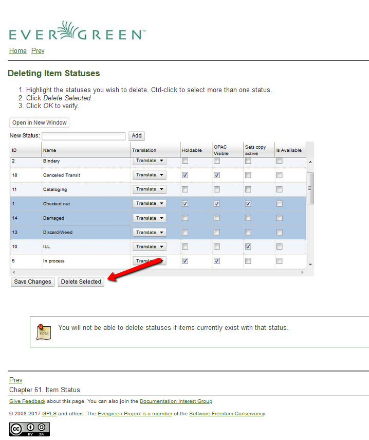
You might have noticed the italicized words
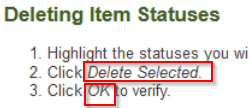
. Click _Delete Selected_. . Click _OK_ to verify.<---- wrapped in underscores
We put all of our docs into the Evergreen code repository
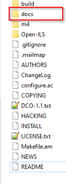
docs folder
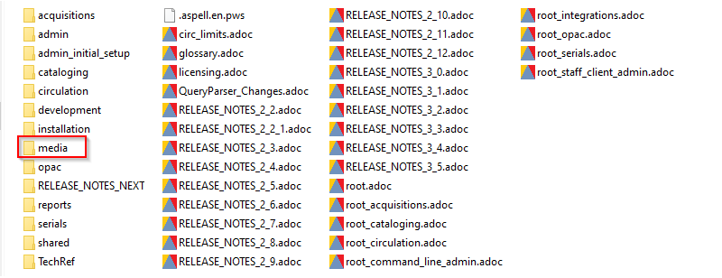
46 items in this folder
media folder
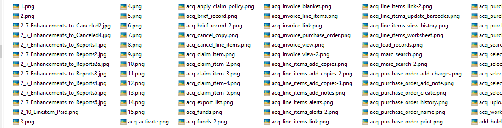
1,344 items in this folder
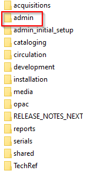
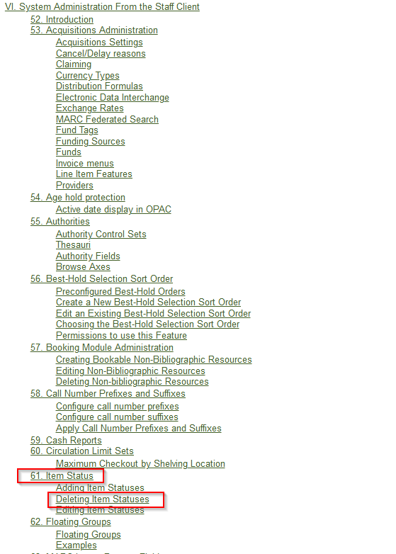
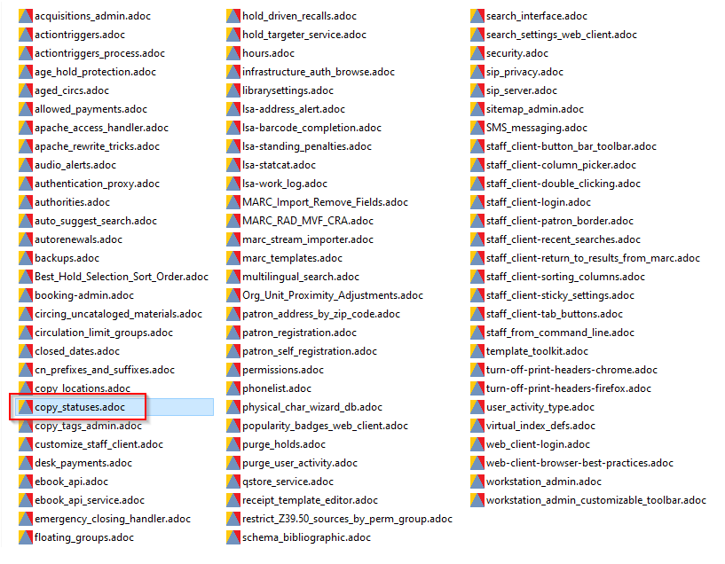
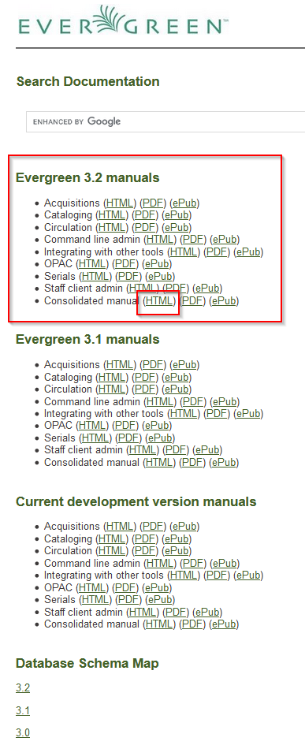
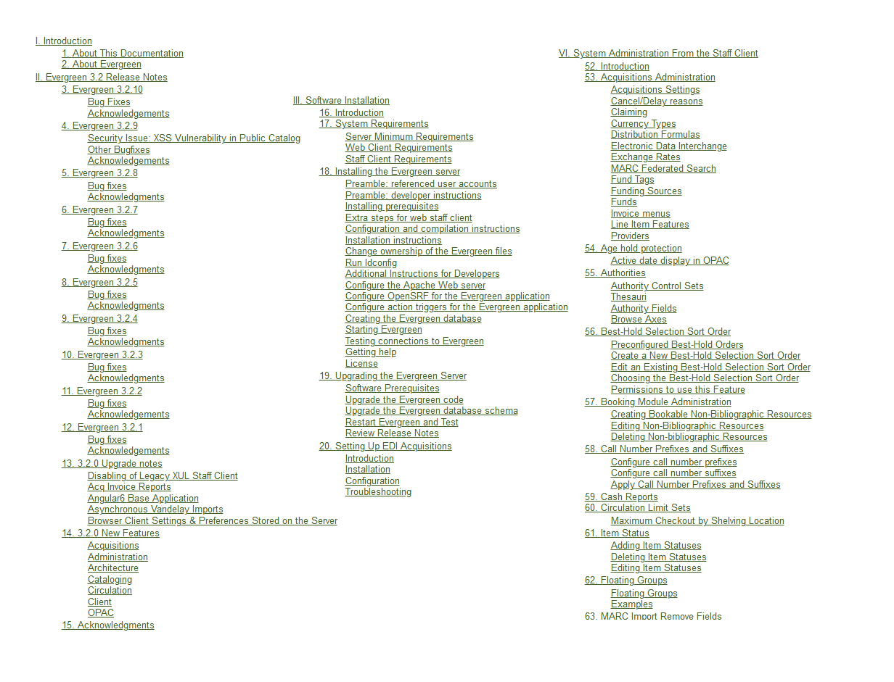
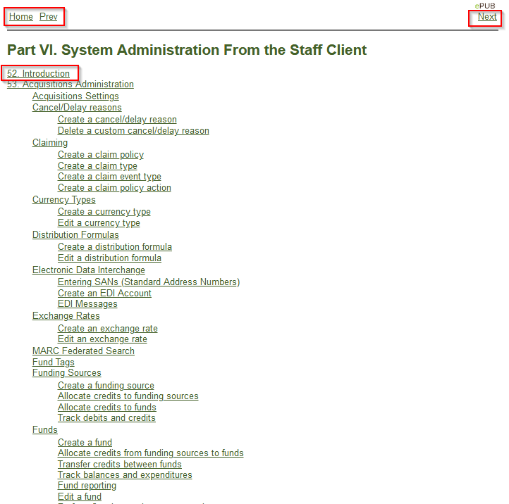
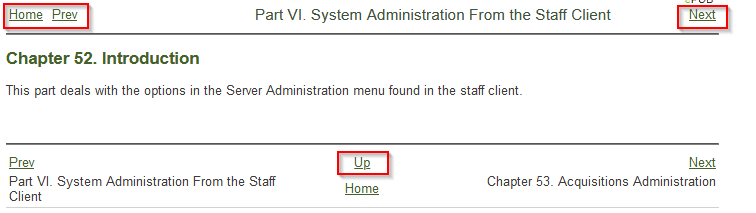
Where'd the nav go?
From Antora's site:
The Static Site Generator for Tech Writers
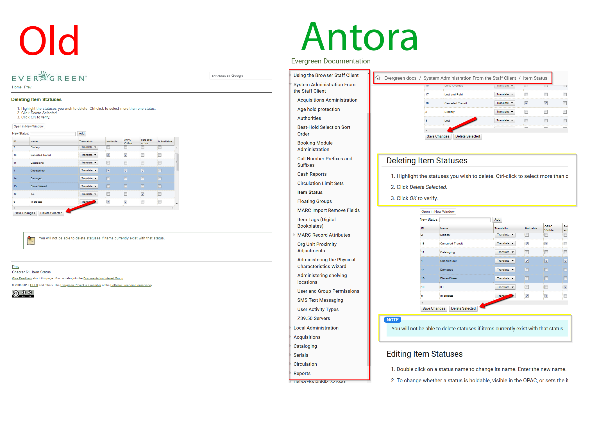
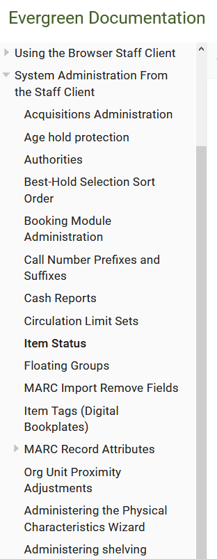
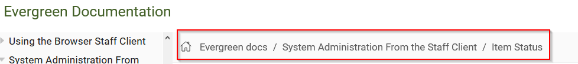
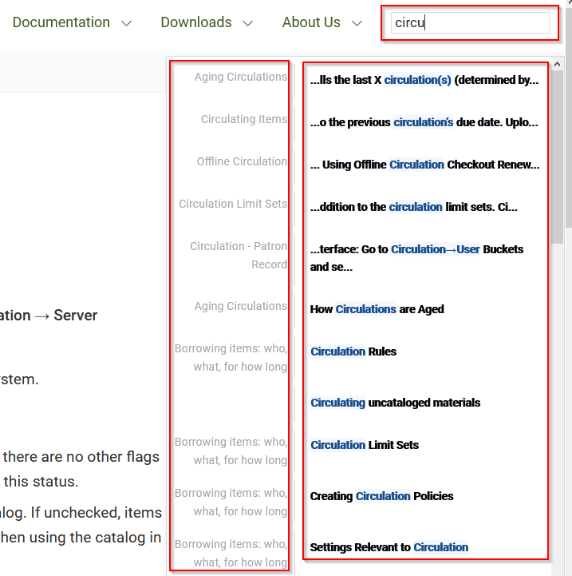
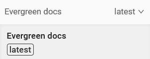
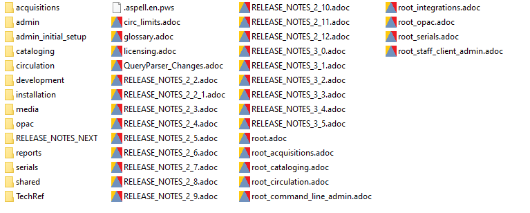
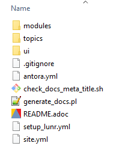
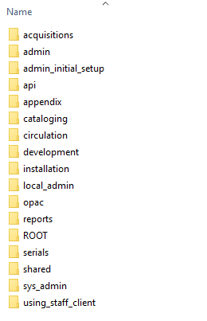
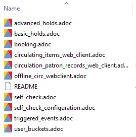
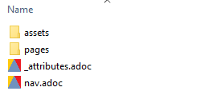
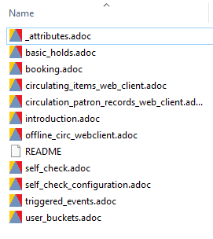
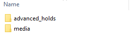
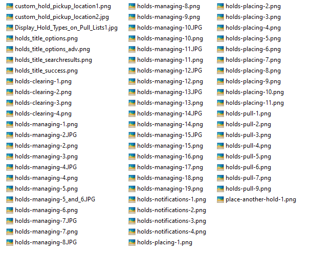
Can be organized per doc
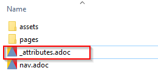
:attachmentsdir: {moduledir}/assets/attachments
:examplesdir: {moduledir}/examples
:imagesdir: {moduledir}/assets/images
:partialsdir: {moduledir}/pages/_partials
Now you can refer to an image like this:
image::media/holds_title_options.png
Add ALT text
[Place Holds screen with Basic Options]
Complete
image::media/holds_title_options.png[Place Holds screen with Basic Options]
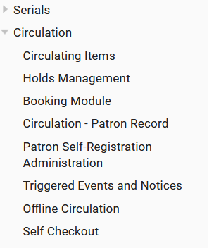
name: docs
title: Evergreen docs
version: 'latest'
nav:
- modules/ROOT/nav.adoc
- modules/installation/nav.adoc
- modules/admin_initial_setup/nav.adoc
- modules/using_staff_client/nav.adoc
- modules/sys_admin/nav.adoc
- modules/local_admin/nav.adoc
- modules/acquisitions/nav.adoc
- modules/cataloging/nav.adoc
- modules/serials/nav.adoc
- modules/circulation/nav.adoc
.......
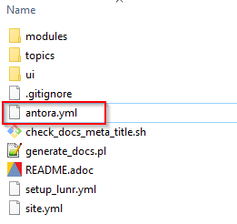
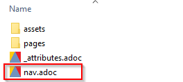
* xref:circulation:introduction.adoc[Circulation]
** xref:circulation:circulating_items_web_client.adoc[Circulating Items]
** xref:circulation:basic_holds.adoc[Holds Management]
** xref:circulation:booking.adoc[Booking Module]
** xref:circulation:circulation_patron_records_web_client.adoc[Circulation - Patron Record]
** xref:admin:patron_self_registration.adoc[Patron Self-Registration Administration]
** xref:circulation:triggered_events.adoc[Triggered Events and Notices]
** xref:circulation:offline_circ_webclient.adoc[Offline Circulation]
** xref:circulation:self_check.adoc[Self Checkout]
Each page has a table of contents
Antora generates that magically based on subheading, sub-subheading, etc.
= Circulating Items =
:toc:
Check Out
~~~~~~~~~~
":toc:" is all you need to make the Table of Contents
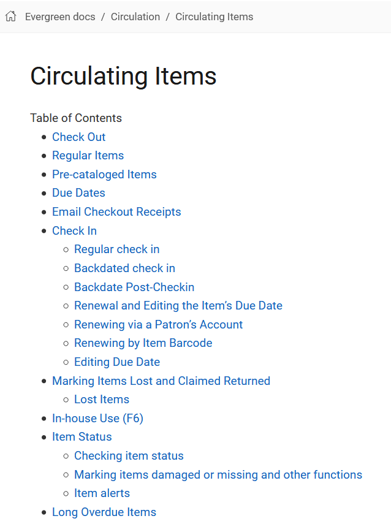
A nice ASCIIDOC editing tool. ASCIIDOCFX
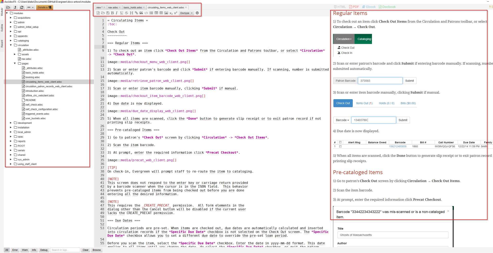
Slides available at:
slides.mobiusconsortium.org/blake/antora
Launchpad bug: LP 1848524